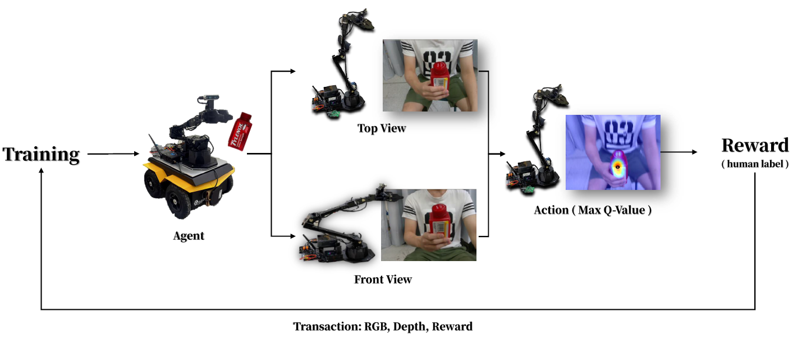
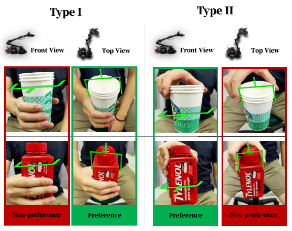

Human-to-robot handover is a key capability of service robot and human robot interaction. Recent works take advantages of existing hand and object segmentation and pose estimation algorithms to generate grasps. On the other hand, end-to-end grasping directly from sensor data without object models has tremendous progress in logistic tasks, but has not been used for human-to-robot handover. However, both categories of approaches aim at grasping without potential harms, but neither considering what grasps and their trajectories may be intrusive to human users. We present our socially-aware end-to-end grasping for human-to-robot handover. We first leverage existing end-to-end grasping as network backbone, and then finetune for non-invasive grasps and trajectories using sample efficient deep reinforcement learning. Comprehensive evaluations are carried out against various recent baselines using multi-stage hand and object prediction and subsequent planning. We show that the proposed approach was more robust to partial occlusions, and execute smooth trajectories close to human demonstrations. A dataset of end-to-end grasping and trajectories for human-to-robot handover and all pretrained models are open access for reproducing this study and can be obtained at https://arg-nctu.github.io/projects/socially-aware-handover.html.
Success rate of end-to-end model in handovers. Objects were first grasped in a box. Due to the consistent background and the lack of human hands, the success rate was 77.5%. Next, the object was held in a human hand and handover was performed; the success rate was reduced to 16.25%. After depth processing, the success rate increased to 53.75%. In addition to depth processing, we tried improving only the annotation method; the success rate increased to 67.5%. Finally, we propose an approach combining processing depth and the annotation method; the success rate increased to 93.75%.
An overview of HERoS framework. We uses ResNet-101 as the main network architecture of HERoS. Given RGB-D images rotated 8 times as input, the system predicts 8 pixel-wise affordance maps. Then select the the largest area of affordance maps as the rotation angle of the gripper (orientation). Finally, project the affordance to the original RGB image combined with the depth information to obtain the pose of the grasp. The difference between the functional grasping block and the socially aware block is whether human habits are taken into consideration, and the model learns human grasping preferences through reinforcement learning.
Grasp choice system architecture diagram. When the image is received, it will control the manipulator from two different perspectives for prediction, selecting the perspective with a larger Q-value to perform the grasping, and receives the reward through the human label after the grasping is completed, so that the agent can learn human preferences.
There are Grasp Type I and Grasp Type II preferences for picking objects. Grasp Type I is picking the middle of objects, and Grasp Type II is picking the top of objects, using different perspectives to predict objects, and finally selecting the grasping perspective preferred by humans.
(1) water cup, (2) small medicine cup, (3) medicine bottle, (4) medicine box, (5) SPAM, (6) banana, (7) lemon, (8) strawberry, (9) peach, (10) pear, (11) plum, (12) mustard, (13) sugar. Fruit objects were plastic.
Comparison table of three datasets of HERoS. HERoS-Af: subset for predicting affordance; HERoS-Ch: subset for learning grasp choice; HERoS-Tr: subset for studying trajectories of human demonstrations.